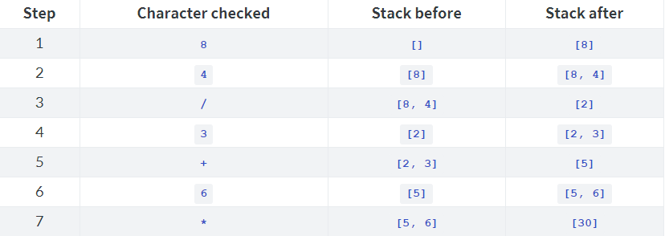

翻译：zusheng
http://www.isbase.cc原文链接：https://dere.github.io/2017-02-13/beginners-assembly-part2/
在本系列的前一部分中，介绍了x86汇编编程的基础知识，如调用堆栈x86调用约定。在这最后一部分，我们将运用这些知识来写我们的RPN计算器。
我们的计算器的完整代码可以在下面链接中找到:
https://gist.github.com/dere/9dff75a67710207e16cd6a8531393ccf
对于那些不熟悉逆波兰表示法的人，可以将表达式使用堆栈进行计算。因此，我们需要创建一个堆栈以及一些_pop和_push函数来操作该堆栈。我们还需要一个名为_print_answer的函数，它将在计算结束时打印数字结果。
首先，我们将在内存中定义一个空间，用于堆栈以及全局变量stack_size，我们需要修改这些变量，使它们不会进入.rodata部分，而是.data：
section .data
stack_size: dd 0 ; create a dword (4-byte) variable set to zero
stack: times 256 dd 0 ; fill the stack with 256 dword zeroes
然后我们可以实现_push和_pop：
_push:
enter 0, 0
; Save the callee-saved registers that I'll be using
push eax
push edx
mov eax, [stack_size]
mov edx, [ebp+8]
mov [stack + 4*eax], edx; Insert the arg into the stack. We scale
; by 4 because each dword is 4 bytes each
inc dword [stack_size] ; Add 1 to stack_size
; Restore the callee-saved registers we used
pop edx
pop eax
leave
ret
_pop:
enter 0, 0
; Save the callee-saved registers
dec dword [stack_size] ; Subtract 1 from stack_size first
mov eax, [stack_size]
mov eax, [stack + 4*eax]; Set the number at the top of the stack to eax
; Here I'd restore the callee-saved registers, but I didn't save any
leave
ret
_print_answer更复杂，因为我们必须将数字转换为字符串，该过程需要使用几个其他函数。我们需要一个_putc函数，它将打印单个字符，一个mod函数来计算两个参数的模数，以及_pow_10来计算10的幂。接下来你会看到为什么我们需要它们。这些都是很简单的：
_pow_10:
enter 0, 0
mov ecx, [ebp+8]; set ecx (caller-saved) to function arg
mov eax, 1 ; first power of 10 (10**0 = 1)
_pow_10_loop_start: ; multiply eax by 10 until ecx is 0
cmp ecx, 0
je _pow_10_loop_end
imul eax, 10
sub ecx, 1
jmp _pow_10_loop_start
_pow_10_loop_end:
leave
ret
_mod:
enter 0, 0
push ebx
mov edx, 0 ; explained below
mov eax, [ebp+8]
mov ebx, [ebp+12]
idiv ebx; divides the 64-bit integer [edx:eax] by ebx. We only want to
; divide the 32-bit integer eax, so we set edx to zero. The
; result of this division is stored in eax, and the remainder
; is stored in edx. As always, you can find more about this
; instruction in the resources below.
mov eax, edx; return the modulus
pop ebx
leave
ret
_putc:
enter 0, 0
mov eax, 0x04 ; write()
mov ebx, 1 ; standard out
lea ecx, [ebp+8]; the input character
mov edx, 1 ; print only 1 character
int 0x80
leave
ret
现在我们如何来打印数字的各个位数？
首先我们可以用数字除以10获得他的余数，这个也就是数字的最后一位数。
例如 123%10=3
然后我们可以通过将数字除以100获得余数再将结果除以10获得十位上的数字。
例如 (123%100)/10=2
这样一直找下去，我们就会发现一个规律：
（数字%10**n）/10**(n-1)
n就是位数，个位就是n=1，十位就是n=2等等
使用该知识，我们可以通过从n = 1开始迭代到n = 10找到数字各个位上的数。这很容易，但是为了防止数字的尾部是0，所以我们需要反过来从n = 10开始迭代到n = 1。
它应该看起来像下面的C代码：
#define MAX_DIGITS 10
void print_answer(int a) {
if (a < 0) { // if the number is negative
putc('-'); // print a negative sign
a = -a; // convert the number to positive
}
int started = 0;
for (int i = MAX_DIGITS; i > 0; i--) {
int digit = (a % pow_10(i)) / pow_10(i-1);
if (digit == 0 && started == 0) continue; // don't print trailing zeroes
started = 1;
putc(digit + '0');
}
}
现在你知道我们为什么需要之前实现的那三个函数了吧。 现在让我们在汇编中实现：
%define MAX_DIGITS 10
_print_answer:
enter 1, 0 ; we'll use 1 byte for "started" variable in C
push ebx
push edi
push esi
mov eax, [ebp+8]; our "a" argument
cmp eax, 0 ; if the number is not negative, skip this if-statement
jge _print_answer_negate_end
; call putc for '-'
push eax
push 0x2d ; '-' character
call _putc
add esp, 4
pop eax
neg eax ; convert a to positive
_print_answer_negate_end:
mov byte [ebp-4], 0 ; started = 0
mov ecx, MAX_DIGITS ; our i variable
_print_answer_loop_start:
cmp ecx, 0
je _print_answer_loop_end
; call pow_10 for ecx. We'll be trying to get ebx to be out "digit" variable in C.
; For now we'll get edx = pow_10(i-1) and ebx = pow_10(i)
push eax
push ecx
dec ecx ; i-1
push ecx; arg1 for _pow_10
call _pow_10
mov edx, eax; edx = pow_10(i-1)
add esp, 4
pop ecx ; restore ecx to i
pop eax
; end pow_10 call
mov ebx, edx; digit = ebx = pow_10(i-1)
imul ebx, 10; digit = ebx = pow_10(i)
; call _mod for (a % pow_10(i)), which is (eax mod ebx)
push eax
push ecx
push edx
push ebx; arg2, ebx = digit = pow_10(i)
push eax; arg1, eax = a
call _mod
mov ebx, eax; digit = ebx = a % pow_10(i+1), almost there
add esp, 8
pop edx
pop ecx
pop eax
; end mod call
; divide ebx ("digit" var) by pow_10(i) (edx). We'll need to save a few registers
; since idiv requires both edx and eax for the dividend. Since edx is our divisor,
; we'll need to move it to some other register
push esi
mov esi, edx
push eax
mov eax, ebx
mov edx, 0
idiv esi; eax holds the result (the digit)
mov ebx, eax; ebx = (a % pow_10(i)) / pow_10(i-1), the "digit" variable in C
pop eax
pop esi
; end division
cmp ebx, 0; if digit == 0
jne _print_answer_trailing_zeroes_check_end
cmp byte [ebp-4], 0 ; if started == 0
jne _print_answer_trailing_zeroes_check_end
jmp _print_answer_loop_continue ; continue
_print_answer_trailing_zeroes_check_end:
mov byte [ebp-4], 1 ; started = 1
add ebx, 0x30 ; digit + '0'
; call putc
push eax
push ecx
push edx
push ebx
call _putc
add esp, 4
pop edx
pop ecx
pop eax
; end call putc
_print_answer_loop_continue:
sub ecx, 1
jmp _print_answer_loop_start
_print_answer_loop_end:
pop esi
pop edi
pop ebx
leave
ret
这是一个艰难的过程，如果你想你可以使用printf("%d")，那么你应该会喜欢这篇文章的结尾，我们来替换这个函数。
现在，我们拥有所以必须的函数了，我们可以直接去实现主要逻辑_start。
正如我们之前所说的，可以将表达式使用堆栈进行计算。当读取一个数字时，它被推入堆栈，当读取操作符时，它被应用于堆栈顶部的两个操作数。
例如，如果我们希望计算84/3+6*（后缀表达式）的值，该过程将如下所示：
如果输入是一个有效的后缀表达式，最后在栈上只有一个元素，这就是表达式求值的答案。因此，在这种情况下，表达式的计算结果为30。
我们需要在汇编中实现的是类似下面的C代码：
int stack[256]; // 256 is probably plenty big for our stack
int stack_size = 0;
int main(int argc, char *argv[]) {
char *input = argv[0];
size_t input_length = strlen(input);
for (int i = 0; i < input_length; i++) {
char c = input[i];
if (c >= '0' && c <= '9') { // if the character is a digit
push(c - '0'); // convert the character digit to an integer and push that
} else {
int b = pop();
int a = pop();
if (c == '+') {
push(a+b);
} else if (c == '-') {
push(a-b);
} else if (c == '*') {
push(a*b);
} else if (c == '/') {
push(a/b);
} else {
error("Invalid input\n");
exit(1);
}
}
}
if (stack_size != 1) {
error("Invalid input\n");
exit(1);
}
print_answer(stack[0]);
exit(0);
}
万事俱备，只欠东风。现在让我们实现主要逻辑_start：
_start:
; you do not get the arguments of _start the same way you do in other functions.
; instead, esp points directly to argc (the number of arguments), and esp+4 points
; to argv. Therefore, esp+4 points to the name of your program, esp+8 points to
; the first argument, etc
mov esi, [esp+8] ; esi = "input" = argv[0]
; call _strlen to find the length of the input
push esi
call _strlen
mov ebx, eax ; ebx = input_length
add esp, 4
; end _strlen call
mov ecx, 0 ; ecx = "i"
_main_loop_start:
cmp ecx, ebx ; if (i >= input_length)
jge _main_loop_end
mov edx, 0
mov dl, [esi + ecx] ; load only a byte from memory into the lower byte of
; edx. We set the rest of edx to zero.
; edx = c variable = input[i]
cmp edx, '0'
jl _check_operator
cmp edx, '9'
jg _print_error
sub edx, '0'
mov eax, edx ; eax = c variable - '0' (the numeric digit, not char)
jmp _push_eax_and_continue
_check_operator:
; call _pop twice to pop b into edi and a into eax
push ecx
push ebx
call _pop
mov edi, eax ; edi = b
call _pop; eax = a
pop ebx
pop ecx
; end call _pop
cmp edx, '+'
jne _subtract
add eax, edi ; eax = a+b
jmp _push_eax_and_continue
_subtract:
cmp edx, '-'
jne _multiply
sub eax, edi ; eax = a-b
jmp _push_eax_and_continue
_multiply:
cmp edx, '*'
jne _divide
imul eax, edi; eax = a*b
jmp _push_eax_and_continue
_divide:
cmp edx, '/'
jne _print_error
push edx ; save edx since we'll need to set it to 0 for idiv
mov edx, 0
idiv edi ; eax = a/b
pop edx
; now we push eax and continue
_push_eax_and_continue:
; call _push
push eax
push ecx
push edx
push eax ; arg1
call _push
add esp, 4
pop edx
pop ecx
pop eax
; end call _push
inc ecx
jmp _main_loop_start
_main_loop_end:
cmp byte [stack_size], 1 ; if (stack_size != 1) print error
jne _print_error
mov eax, [stack]
push eax
call _print_answer
; print a final newline
push 0xA
call _putc
; exit successfully
mov eax, 0x01 ; 0x01 = exit()
mov ebx, 0 ; 0 = no errors
int 0x80; execution will end here
_print_error:
push error_msg
call _print_msg
mov eax, 0x01
mov ebx, 1
int 0x80
你还需要在.rodata部分中添加一个error_msg字符串，如：
section .rodata
; Declare some bytes at a symbol called error_msg. NASM's db pseudo-instruction
; allows either a single byte value, a constant string, or a combination of the two
; as seen here. 0xA = new line, and 0x0 = string-terminating null
error_msg: db "Invalid input", 0xA, 0x0
我们完成了！时间给所有的朋友留下了深刻印象。很多旧程序都基本上可以使用汇编来完成它，比如原来的original RollerCoaster Tycoon!。
以下几点可以帮助你继续进行练习：
1、在输入中的操作数和运算符之间添加对可选空格的支持
2、添加对多位操作数的支持
3、允许输入负数
4、使用C标准库中的_strlen替换_strlen，并调用printf替换_print_answer。
弗吉尼亚大学x86汇编指南
英特尔寄存器的艺术
NASM：Intel x86指令参考